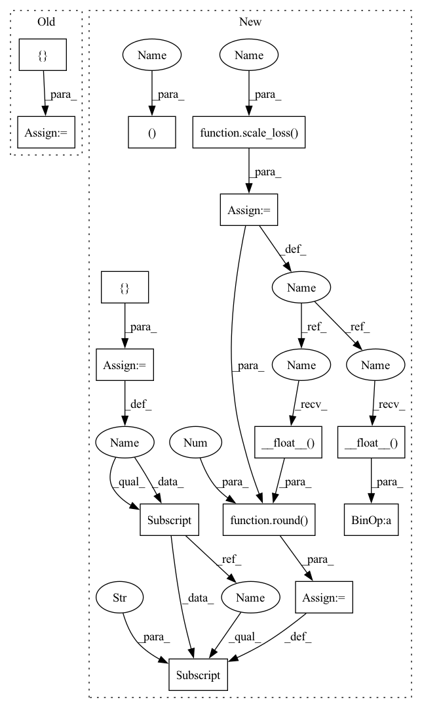

Pattern ID :25285

Before Change
hypothesis, Y_val,
idx + 1)
total_cost = np.sum(avg_cost_list)
temp = {}
for i in range(len(loss)):
temp[(str(loss[i]))[:-2]] = (round(avg_cost_list[i], 3))
valid_epoch.set_postfix(losses=temp, tot=total_cost)
After Change
with tqdm(dataset, desc="Validation{}".format(str(epoch)), total=len(dataset), leave=True) as valid_epoch:
with torch.no_grad():
for idx, (X_val, Y_val, dia, sys, size_class) in enumerate(valid_epoch):
hypothesis, scaled_ple = model(X_val, scaler=scaler)
avg_cost_list, cost = tu.calc_losses(avg_cost_list, loss,
hypothesis, Y_val,
idx + 1)
ple_cost = scale_loss(scaled_ple, X_val)
total_cost = np.sum(avg_cost_list) + ple_cost.__float__()
postfix_dict = {}
for i in range(len(loss)):
postfix_dict[(str(loss[i]))[:-2]] = (round(avg_cost_list[i], 3))
postfix_dict["scale_variance"] = round(ple_cost.__float__(), 3)
valid_epoch.set_postfix(losses=postfix_dict, tot=total_cost)
// wandb.init(project="VBPNet", entity="paperchae")
// wandb.log({"Valid Loss": total_cost}, step=epoch)
// wandb.log({"Valid Loss": valid_avg_cost,
In pattern: SUPERPATTERN
Frequency: 3
Non-data size: 14
Instances
Fragment ID: 77203211
Project Name: tvs-ai/pytorch_rppgs
Commit Name: 1eb3667871c0227765c81e5a4b0d6bb6fcbd70b0
Time: 2023-01-05
Author: forownsake@gmail.com
File Name: vid2bp/validation.py
M Class Name: AnonimousClass
N Class Name: AnonimousClass
M Method Name: validation(5)
N Method Name: validation(5)
M Parent Class:
N Parent Class:
M File Name: vid2bp/validation.py
N File Name: vid2bp/validation.py
M Start Line: 31
M End Line: 43
N Start Line: 16
N End Line: 36
'>
Before Change
hypothesis, Y_train,
idx + 1)
total_cost = np.sum(avg_cost_list)
temp = {}
for i in range(len(loss)):
temp[(str(loss[i]))[:-2]] = (round(avg_cost_list[i], 3))
train_epoch.set_postfix(losses=temp, tot=total_cost)
cost.backward()
After Change
leave=True) as train_epoch:
for idx, (X_train, Y_train, d, s, size_class) in enumerate(train_epoch):
optimizer.zero_grad()
hypothesis, scaled_ple = model(X_train, scaler=scaler)
avg_cost_list, cost = tu.calc_losses(avg_cost_list, abp_losses,
hypothesis, Y_train,
idx + 1)
ple_cost = scale_loss(scaled_ple, X_train)
total_cost = np.sum(avg_cost_list) + ple_cost.__float__()
postfix_dict = {}
for i in range(len(abp_losses)):
postfix_dict[(str(abp_losses[i]))[:-2]] = (round(avg_cost_list[i], 3))
postfix_dict["scale_variance"] = round(ple_cost.__float__(), 3)
train_epoch.set_postfix(losses=postfix_dict, tot=total_cost)
(cost + ple_cost).backward()
optimizer.step()
'>
Fragment ID: 77203212
Project Name: tvs-ai/pytorch_rppgs
Commit Name: 1eb3667871c0227765c81e5a4b0d6bb6fcbd70b0
Time: 2023-01-05
Author: forownsake@gmail.com
File Name: vid2bp/train.py
M Class Name: AnonimousClass
N Class Name: AnonimousClass
M Method Name: train(7)
N Method Name: train(7)
M Parent Class:
N Parent Class:
M File Name: vid2bp/train.py
N File Name: vid2bp/train.py
M Start Line: 10
M End Line: 27
N Start Line: 10
N End Line: 33
'>
Before Change
hypothesis, Y_test,
idx + 1)
total_cost = np.sum(avg_cost_list)
temp = {}
for i in range(len(loss)):
temp[(str(loss[i]))[:-2]] = (round(avg_cost_list[i], 3))
test_epoch.set_postfix(losses=temp, tot=total_cost)
After Change
with tqdm(dataset, desc="Test{}".format(str(epoch)), total=len(dataset), leave=True) as test_epoch:
with torch.no_grad():
for idx, (X_test, Y_test, dia, sys, size_class) in enumerate(test_epoch):
hypothesis, scaled_ple = model(X_test, scaler=scaler)
avg_cost_list, cost = tu.calc_losses(avg_cost_list, loss,
hypothesis, Y_test,
idx + 1)
ple_cost = scale_loss(scaled_ple, X_test)
total_cost = np.sum(avg_cost_list) + ple_cost.__float__()
postfix_dict = {}
for i in range(len(loss)):
postfix_dict[(str(loss[i]))[:-2]] = (round(avg_cost_list[i], 3))
postfix_dict["scale_variance"] = round(ple_cost.__float__(), 3)
test_epoch.set_postfix(losses=postfix_dict, tot=total_cost)
if plot_flag:
plot = plot_prediction(X_test[0], Y_test[0], [dia[0], sys[0], size_class[0]],
'>
Fragment ID: 77203213
Project Name: tvs-ai/pytorch_rppgs
Commit Name: 1eb3667871c0227765c81e5a4b0d6bb6fcbd70b0
Time: 2023-01-05
Author: forownsake@gmail.com
File Name: vid2bp/test.py
M Class Name: AnonimousClass
N Class Name: AnonimousClass
M Method Name: test(6)
N Method Name: test(6)
M Parent Class:
N Parent Class:
M File Name: vid2bp/test.py
N File Name: vid2bp/test.py
M Start Line: 65
M End Line: 77
N Start Line: 17
N End Line: 38